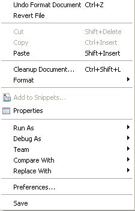
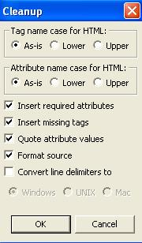
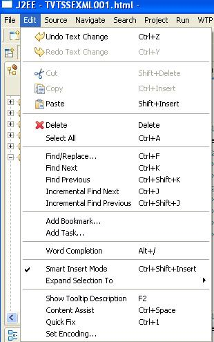
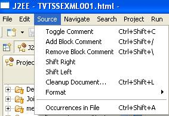
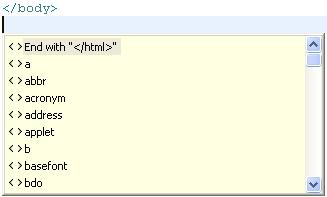
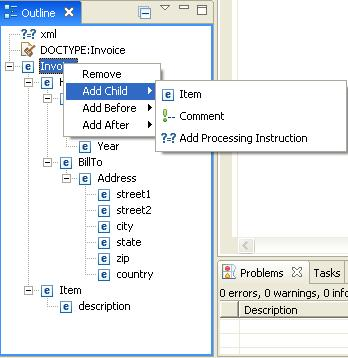
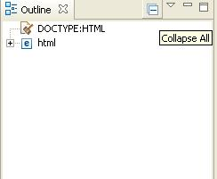

HTML Source Page Editor
Prerequisites:
- Open the J2EE Perspective if it is not already open.(Window
->Open Perspective -> J2EE)
- Create a new dynamic web project if it does not already exist.
(File ->New ->Dynamic Web Project)
- Create and open a HTML file if it does not already exist (File
->New ->Other ->Web ->HTML)
Steps:
- Position the mouse over tags (e.g., <HTML>,
<HEAD>, and <BODY>) or attributes (type and border) within
the content area of the editor
- Verify the Hover Helps are translated.
- Position the mouse somewhere in the content area of the Source
page and press mouse button 2.
- Verify the following items in the context menu that appears
(including cascading menus), which is shown below:
- Undo/Undo Text Change
- Cut
- Paste
- Cleanup Document...
- Format
- Format Active Elements
- Add to Snippets...
- Properties
Note: Other menu items are covered by IES.

- Select Cleanup Document...
- Verify the Cleanup dialog that appears.

- Press the Cancel button from the Cleanup dialog
- Select Edit from the menu bar.
- Verify the following menu items (including cascading menus):
- Undo Text Change
- Redo Text Change
- Expand Selection To (and submenu)
- Show Tooltip Description
- Content Assist
- Quick Fix
Note: Translations for other menu items are covered by IES.

- Select Source from the menu bar.
- Verify all menu items.

- Select Navigate from the menu bar.
- Verify Open Selection menu item (Translations for other menu
items are covered by IES).

- Remove the </html> tag at the end of the file.
- Select Edit->Content Assist from the menu bar.
- Verify End with "</html" is translated.

- In the Outline view, expand all nodes and selecting each one,
verify context menu. Some of the items include:
- Remove
- Add Before
- Add After
- Edit Doctype...
- Add Child
- Add Attribute

- Also verify any dialogs that pop up when you select menu items
with "..."
- In the Outline view, hover over toolbar items and verify
Collapse All.

- Click on the Outline view Menu (the triangle button) and
verify Link with Editor.

- Close the editor, discarding any changes.